Portlets are pluggable user interface components that are managed and displayed within a portal. Functional Portlets support all functions of a Portal. They are built into the portal and are accessed via toolbar links as required when actioning portal tasks.
GateIn 3.2 provides the following portlets by default:
- Account Portlet
The Account Portlet allows users to register a new account and choose a preferred language for displaying the Portal interface.
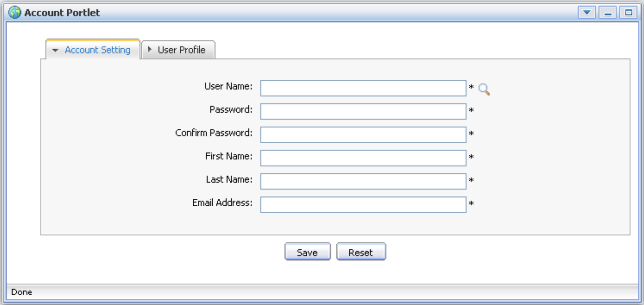- Organization Portlet
The Organization Portlet is used to manage user information, groups of users and groups memberships.
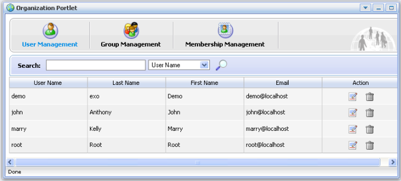- Application Registry Portlet
The Application Registry Portlet is used to manage different application categories. You can add, edit, set permissions and delete a category and its applications.
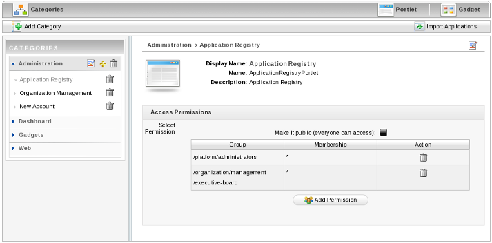- Star Toolbar Portlet
The Star Toolbar Portlet is used to change the default language, the skin of the portal or to sign out.

The Interface Portlets are the front-end components of the Portal. They provide ways for users to interact with the portal. GateIn 3.2 provides the following Interface Portlets:
- Banner Portlet
This Portlet contains the organization's slogan, logo, and icons.
- HomePage Portlet
This Portlet is the home page for a portal. The home page is the first page displayed when you visit the site.
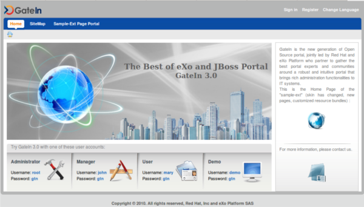- Navigation Portlet
This Portlet provides a navigation bar. A navigation bar is a menu that helps users to visualize the structure of a site and provide links to quickly move from page to page.
- Sitemap Portlet
This Portlet displays a site map page of a web site. It lists pages on a website, typically organized in hierarchical fashion.
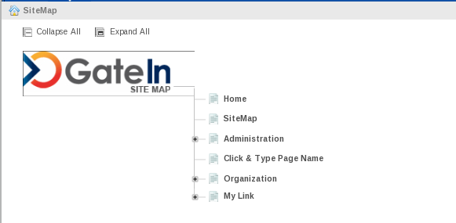- Breadcumbs Portlet
This Portlet displays the 'path' the user has taken from the home page to arrive at the currrent page.
- Dashboard Portlet
This portlet is used for hosting mini-applications known as gadgets. The dashboard uses a variety of graphical effects for displaying, opening, and using gadgets.
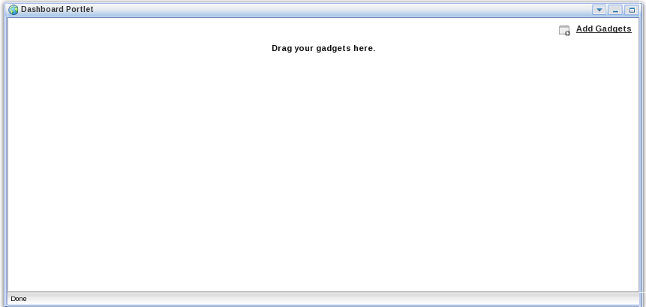Refer to Section 3.3, “Dashboard Portlet” or Chapter 7, Portlets and Gadgets Administration for more information.
- Iframe Portlet
This Portlet is used to create inline frames (IFrame) elements for a site. An Iframe is a HTML element which can embed another document into a parent HTML document. By using IFrames, embedded data is displayed inside a sub-window of browser.
- Gadget Wrapper Portlet
This Portlet allows users to view a gadget in canvas mode.

- Footer Portlet
This Portlet provides the footer for a site. This footer provides information or links about the site's author/institutional sponsor, the date of the last revision made to the site, copyright information, comments form and navigational links.
The Dashboard portlet is used for hosting mini applications known as gadgets. The Dashboard uses a variety of graphical effects for displaying, opening and using gadgets.
Gadgets within the Dashboard portlet can be moved and rearranged. New gadgets can be created and unnecessary ones deleted. More than one instance of the same gadget can be opened at the same time and each instance of the same gadget can have different settings. The gadgets instances are completely independent.
Click on Dashboard in the toolbar to access the Dashboard portlet.
Click on Add Gadgets to open the Dashboard Workspace.
The active Dashboard can be individually named by clicking on the default name ("Click and Type Page Name")...
...and entering a new name:
The Dashboard Workspace lists all available gadgets. Four gadgets are provided by default with GateIn 3.2, however you can add many more.
Default Gadgets:
- Calendar
The calendar gadget allows users to switch easily between daily, monthly and yearly view and, is customizable to match your portal's theme.
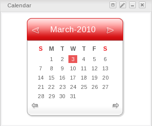- ToDo
This application helps you organize your day and work group. It is designed to keep track of your tasks in a convenient and transparent way. Tasks can be highlighted with different colors.
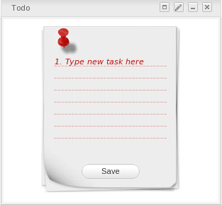- Calculator
This mini-application lets you perform most basic arithmetic operations and can be themed to match the rest of your portal.
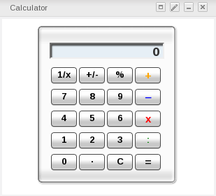- RSS Reader
An RSS reader, or aggregator, collates content from various, user-specified feed sources and displays them in one location. This content can include, but isn't limited to, news headlines, blog posts or email. The RSS Reader gadget displays this content in a single window on your Portal page.
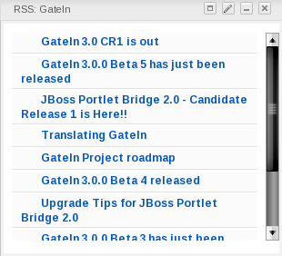- More Gadgets
Many more gadgets can be found at Google Gadgets. GateIn 3.2 is compatible with most of the gadgets available there.
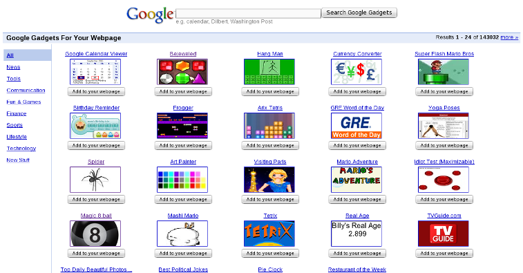
To add more gadgets from external sources:
Obtain the URL (.xml or .rss) of the gadget you wish to add from the gadget source.
The gadgets available at Google Gadget provide a link to View source. Clicking on this link will open a page showing the gadget's XML source. Use the URL of this page in the Dashboard Workspace. The URL should end with
.xmlFor example:
URL Types
Remote gadgets can be only created using an .xml link or RSS URL. However, if you use a link that generates an RSS feed (for example: http://feeds.feedburner.com/gatein), a new RSS reader gadget will be created automatically even if the URL does not end with
.rss.Return to your portal and click Dashboard in the toolbar.
Click on Add Gadgets in the Dashboard to open the Dashboard Workspace.
The Dashboard Workspace dialog appears:
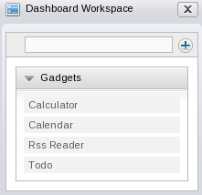Paste the URL obtained in step 1 into the text box above the gadget list.
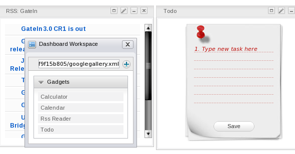Click on the plus icon to add the new gadget to the page.
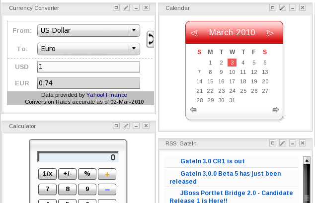